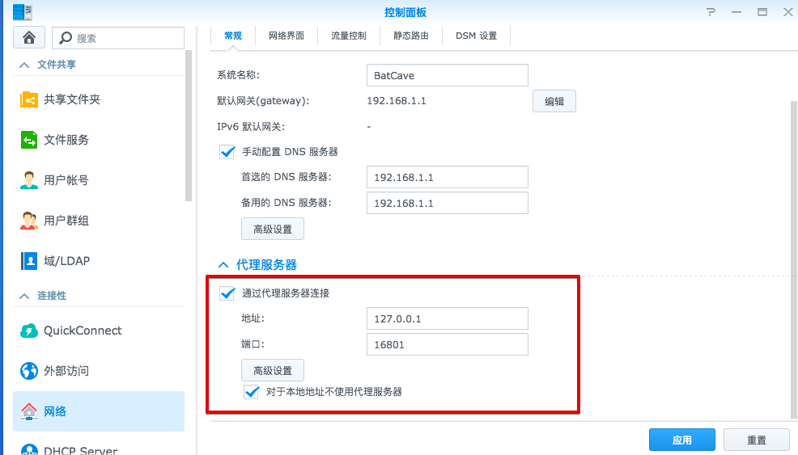

最近一段时间买了个 NAS，用了之后感觉确实很不错，基本上就是一个家用的服务器，什么东西都可以往上扔。唯一后悔的就是买便宜了（毕竟穷），DS216Play 使用的是 STM STiH412 的 32位处理器，既然是 32位，所以一个大杀器－Docker 没法用了，也就是很多基于 Docker 的开箱即用第三方软件没法用。还有就是内置的 VideoStation 是从 IMDb 抓取封面信息，而 IMDb 是被墙了的。于是准备安装个 SS（ShadowSocks），顺便把 Dropbox 里面将近 100G 文件同步回来，之前买的 SSLedge 一个月才 30G 流量，要同步三个月才能完全把 Dropbox 上面文件同步回来，自建的 SS 直接是 1T，相当划算。
安装 ipkg
开始之前需要安装 ipkg 包管理器，这样后面很多软件包就能使用了。因为没有找到适合 STiH412 处理器的安装脚本，所以我们下一个相似的：
$ wget http://ipkg.nslu2-linux.org/feeds/optware/cs08q1armel/cross/unstable/syno-mvkw-bootstrap_1.2-7_arm.xsh
$ chmod 700 syno-mvkw-bootstrap_1.2-7_arm.xsh
$ sh syno-mvkw-bootstrap_1.2-7_arm.xsh
运行之后会报错，并生成一个 bootstrap 目录，进去 bootstrap 目录并修改 bootstrap.sh 文件
#if ! grep Feroceon-KW /proc/cpuinfo >/dev/null 2>&1; then
# echo "Error: CPU not Marvell Kirkwood, probably wrong bootstrap.xsh"
# exit 3
#fi
找到以上文本加 # 注释掉保存退出，然后运行：
./bootstrap.sh
接着重启 NAS，重启完成后更新一下 ipkg update 如果无误就说明安装完成。
安装 SS
shadowsocks（python）
第一个想到的是直接用 python 版的 SS，装个 Python 然后 pip 一下就能用了，首先在 NAS 的套件中心里面安装 python2 和 python 3，然后安装 SS：
wget https://bootstrap.pypa.io/get-pip.py
python get-pip.py
pip install shadowsocks
如果 wget 有问题可以 sudo ipkg remove wget 再安装 sudo ipkg install wget-ssl
新建或编辑 shadowsocks.json 文件内容如下：
{
"server":"my_server_ip",
"server_port":8388,
"local_address": "127.0.0.1",
"local_port":1080,
"password":"mypassword",
"timeout":300,
"method":"aes-256-cfb",
"fast_open": false
}
最后执行命令 sslocal -c shadowsocks.json -d start 运行。
这个时候问题出现了，即使有库文件 /usr/lib/libcrypto.so 运行也会出现错误：
File "/usr/lib/python2.7/ctypes/util.py", line 247, in find_library
raise RuntimeError("can not find library %s" % name)
RuntimeError: can not find library crypto
找了一圈没找到答案，不知道是不是 SS 的问题。所以果断换 方案二：使用 C 语言编写的 shadowsocks-libev。
shadowsocks-libev
因为怕搞坏自己的生产环境，所以直接在 VPS 上编译得了，使用的是 64bit Ubuntu 14.03。 先要在 Synology Open Source Project 找到 DS216Play 的交叉编译工具：monaco-gcc493_glibc220_hard-GPL.txz 然后 SSH 连接 VPS 进行编译工作:
apt-get -y install make binutils
mkdir ss
cd ss
wget http://iweb.dl.sourceforge.net/project/dsgpl/DSM%206.0%20Tool%20Chains/STMicroelectronics%20Monaco%20Linux%203.10.77/monaco-gcc493_glibc220_hard-GPL.txz
tar xvf monaco-gcc493_glibc220_hard-GPL.txz
export PATH="/root/ss/arm-unknown-linux-gnueabi/bin:$PATH"
export CC=/root/ss/arm-unknown-linux-gnueabi/bin/arm-unknown-linux-gnueabi-gcc
export LD=/root/ss/arm-unknown-linux-gnueabi/bin/arm-unknown-linux-gnueabi-ld
export RANLIB=/root/ss/arm-unknown-linux-gnueabi/bin/arm-unknown-linux-gnueabi-ranlib
export CFLAGS="-I/root/ss/arm-unknown-linux-gnueabi/arm-unknown-linux-gnueabi/include"
export LDFLAGS="-L/root/ss/arm-unknown-linux-gnueabi/arm-unknown-linux-gnueabi/lib"
# 依赖zlib，下载编译
wget http://zlib.net/zlib-1.2.8.tar.gz
tar xvf zlib-1.2.8.tar.gz
cd zlib-1.2.8/
./configure --prefix=/root/dist/zlib-1.2.8
make & make install
# 依赖openssl，下载编译
wget https://www.openssl.org/source/openssl-1.0.2h.tar.gz
tar xvf openssl-1.0.2h.tar.gz
cd openssl-1.0.2h
./Configure dist --prefix=/root/dist/openssl-1.0.2h
make
make install
# 编译shadowsocks-libev
wget https://github.com/shadowsocks/shadowsocks-libev/archive/v2.4.6.tar.gz
tar xvf v2.4.6.tar.gz
cd shadowsocks-libev-2.4.6
# 配置 需要注意的是--host选项，目标NAS不同值可能也会不同
# 详见Synology开发指南的Compile Open Source Projects章节
./configure \
--with-zlib=/root/dist/zlib-1.2.8 \
--with-openssl=/root/dist/openssl-1.0.2h \
--prefix=/root/dist/ss \
--host=arm-unknown-linux-gnueabi
make
make install
这样 ss 就会编译到 /root/dist/ss 目录，这个时候打包:
tar cvf shadowsocks.tar ss/
另开一个本地终端从 VPS 取回文件：
scp xxx@xxx.xxx.xxx.xxx:/root/dist/shadowsocks.tar .
运行
需要知道的是 shadowsocks 是一个 socket 代理，而群晖 NAS 只支持 HTTP 代理，所以我们需要 Privoxy软件转换下，幸运的是 ipkg 里面刚好有此软件包。
sudo ipkg install privoxy
新建 shadowsocks 配置文件 config.json，内容如下：
{
"server":"xxx.xx.xx.xx",
"server_port":1984,
"local_port":16800,
"password":"xxxx",
"method":"aes-256-cfb",
"timeout":60
}
新建 Privoxy 配置文件 privoxy.config：
listen-address 127.0.0.1:16801 #监听本地的16801端口
forward / .
forward-socks5 .dropbox.com 127.0.0.1:16800 . #把访问 dropbox 的数据都通过ss 的代理端口转发出去
forward-socks5 .tmdb.org 127.0.0.1:16800 . #把访问 tmdb 的数据都通过ss 的代理端口转发出去
#forward-socks5 / 127.0.0.1:16800 . #全部转发
表示监听本地 16801 的端口数据转发到本地的socks5 16800 端口。这里只有两个网站的数据经过 ss 代理，一个是 Dropbox ，另一个是 tmdb（VideoStation 封面数据抓取网址）。如果需要更多可以一个个添加进去或者使用 actionfiles。
后台运行：
./ss-local -c config.json &
privoxy privoxy.config
然后进 NAS 设置一下就 OK 了： 
编译好的 shadowsocks 文件下载：DS216Play-Utility，以后 DS216Play 相关的自己编译的工具会放在 GitHub 上。
自动运行
最后写一段自动运行脚本，放在 NAS 的任务计划中，设置每二十分钟运行一下，因为发现两个进程会有意外退出的情况，还没找原因：
#!/bin/sh
echo "Please run it with source command!"
i1=`ps -ef | grep -E "ss-local*"|grep -v grep|awk '{print $2}'`
if (kill -9 $i1)
then
{
echo 'ss killed'
}
else
{
echo 'no ss found!'
}
fi
~/Software/ShadowSocks/bin/ss-local -c ~/Software/ShadowSocks/bin/config.json &
echo "ss lunched!"
i2=`ps -ef | grep -E "privoxy*"|grep -v grep|awk '{print $2}'`
if (kill -9 $i2)
then
{
echo 'privoxy killed'
}
else
{
echo 'no privoxy found!'
}
fi
privoxy ~/Software/ShadowSocks/privoxy.config
echo "privoxy lunched!"